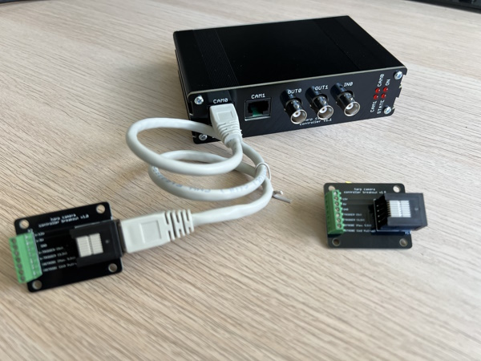

Namespace Harp.CameraControllerGen2
Harp Camera Controller
This device contains the necessary circuitry to synchronously control and supply 2 cameras.

Licensing
The code, designs, documentation, and photos available in this repository is free: you can redistribute it and/or modify it under the terms of the used license. Each subdirectory will contain a license or, possibly, a set of licenses if it involves both hardware and software. Check files named LICENSE.
| CameraControllerGen2 | |
|---|---|
| whoAmI | 1170 |
| firmwareVersion | 1.1 |
| hardwareTargets | 1.2 |
Registers
| name | address | type | length | access | description | range | interfaceType |
|---|---|---|---|---|---|---|---|
| Cam0Event | 32 | U8 | Event | Signals a frame was triggered on camera 0 | CameraEvents | ||
| Cam1Event | 33 | U8 | Event | Signals a frame was triggered on camera 1 | CameraEvents | ||
| ConfigureCam0Event | 34 | U8 | Write | Configures the event on camera 0 | EventConfiguration | ||
| ConfigureCam1Event | 35 | U8 | Write | Configures the event on camera 0 | EventConfiguration | ||
| StartAndStop | 36 | U8 | Write | Starts and stops the cameras immediately | CameraFlags | ||
| StartAndStopTimestamped | 37 | U8 | Write | Starts and stops the cameras on a timestamp | CameraFlags | ||
| StartTimestamp | 38 | U32 | Write | Specifies when the camera will start to acquire frames | |||
| StopTimestamp | 39 | U32 | Write | Specifies when the camera will stop acquiring frames | |||
| TriggerConfigCam0 | 42 | U8 | Write | Configures the trigger source for camera 0 | TriggerSource | ||
| TriggerInvertedCam0 | 43 | U8 | Write | Configures whether trigger is inverted for camera 0 | TriggerInverted | ||
| StrobeSourceCam0 | 44 | U8 | Write | Select the strobe source line for camera 0. The direct line or with pull-up. | StrobeSource | ||
| TriggerFrequencyCam0 | 45 | U16 | Write | Specifies the trigger frequency for camera 0 between 1 and 1000 | |||
| TriggerDurationCam0 | 46 | U16 | Write | Sets the duration of the trigger pulse, in microseconds (minimum is 100), for camera 0 | |||
| TriggerConfigCam1 | 49 | U8 | Write | Configures the trigger source for camera 1 | TriggerSource | ||
| TriggerInvertedCam1 | 50 | U8 | Write | Configures whether trigger is inverted for camera 1 | TriggerInverted | ||
| StrobeSourceCam1 | 51 | U8 | Write | Select the strobe source line for camera 1. The direct line or with pull-up. | StrobeSource | ||
| TriggerFrequencyCam1 | 52 | U16 | Write | Specifies the trigger frequency for camera 1 between 1 and 1000 | |||
| TriggerDurationCam1 | 53 | U16 | Write | Sets the duration of the trigger pulse, in microseconds (minimum is 100), for camera 1 | |||
| ConfigureOutput0 | 56 | U8 | Write | Configures the digital Output 0 | OutputConfiguration | ||
| ConfigureOutput1 | 57 | U8 | Write | Configures the digital Output 1 | OutputConfiguration | ||
| OutputSet | 60 | U8 | Write | Set the specified digital output lines | DigitalOutputs | ||
| OutputClear | 61 | U8 | Write | Clear the specified digital output lines | DigitalOutputs | ||
| OutputToggle | 62 | U8 | Write | Toggle the specified digital output lines | DigitalOutputs | ||
| OutputState | 63 | U8 | Write | Write the state of all digital output lines | DigitalOutputs | ||
| InputState | 64 | U8 | Event | Specifies the state of the digital Input 0 | DigitalInputs |
Classes
- AsyncDevice
Represents an asynchronous API to configure and interface with CameraControllerGen2 devices.
- Cam0Event
Represents a register that signals a frame was triggered on camera 0.
- Cam1Event
Represents a register that signals a frame was triggered on camera 1.
- ConfigureCam0Event
Represents a register that configures the event on camera 0.
- ConfigureCam1Event
Represents a register that configures the event on camera 0.
- ConfigureOutput0
Represents a register that configures the digital Output 0.
- ConfigureOutput1
Represents a register that configures the digital Output 1.
- CreateCam0EventPayload
Represents an operator that creates a message payload that signals a frame was triggered on camera 0.
- CreateCam1EventPayload
Represents an operator that creates a message payload that signals a frame was triggered on camera 1.
- CreateConfigureCam0EventPayload
Represents an operator that creates a message payload that configures the event on camera 0.
- CreateConfigureCam1EventPayload
Represents an operator that creates a message payload that configures the event on camera 0.
- CreateConfigureOutput0Payload
Represents an operator that creates a message payload that configures the digital Output 0.
- CreateConfigureOutput1Payload
Represents an operator that creates a message payload that configures the digital Output 1.
- CreateInputStatePayload
Represents an operator that creates a message payload that specifies the state of the digital Input 0.
- CreateMessage
Represents an operator which creates standard message payloads for the CameraControllerGen2 device.
- CreateOutputClearPayload
Represents an operator that creates a message payload that clear the specified digital output lines.
- CreateOutputSetPayload
Represents an operator that creates a message payload that set the specified digital output lines.
- CreateOutputStatePayload
Represents an operator that creates a message payload that write the state of all digital output lines.
- CreateOutputTogglePayload
Represents an operator that creates a message payload that toggle the specified digital output lines.
- CreateStartAndStopPayload
Represents an operator that creates a message payload that starts and stops the cameras immediately.
- CreateStartAndStopTimestampedPayload
Represents an operator that creates a message payload that starts and stops the cameras on a timestamp.
- CreateStartTimestampPayload
Represents an operator that creates a message payload that specifies when the camera will start to acquire frames.
- CreateStopTimestampPayload
Represents an operator that creates a message payload that specifies when the camera will stop acquiring frames.
- CreateStrobeSourceCam0Payload
Represents an operator that creates a message payload that select the strobe source line for camera 0. The direct line or with pull-up.
- CreateStrobeSourceCam1Payload
Represents an operator that creates a message payload that select the strobe source line for camera 1. The direct line or with pull-up.
- CreateTimestampedCam0EventPayload
Represents an operator that creates a timestamped message payload that signals a frame was triggered on camera 0.
- CreateTimestampedCam1EventPayload
Represents an operator that creates a timestamped message payload that signals a frame was triggered on camera 1.
- CreateTimestampedConfigureCam0EventPayload
Represents an operator that creates a timestamped message payload that configures the event on camera 0.
- CreateTimestampedConfigureCam1EventPayload
Represents an operator that creates a timestamped message payload that configures the event on camera 0.
- CreateTimestampedConfigureOutput0Payload
Represents an operator that creates a timestamped message payload that configures the digital Output 0.
- CreateTimestampedConfigureOutput1Payload
Represents an operator that creates a timestamped message payload that configures the digital Output 1.
- CreateTimestampedInputStatePayload
Represents an operator that creates a timestamped message payload that specifies the state of the digital Input 0.
- CreateTimestampedOutputClearPayload
Represents an operator that creates a timestamped message payload that clear the specified digital output lines.
- CreateTimestampedOutputSetPayload
Represents an operator that creates a timestamped message payload that set the specified digital output lines.
- CreateTimestampedOutputStatePayload
Represents an operator that creates a timestamped message payload that write the state of all digital output lines.
- CreateTimestampedOutputTogglePayload
Represents an operator that creates a timestamped message payload that toggle the specified digital output lines.
- CreateTimestampedStartAndStopPayload
Represents an operator that creates a timestamped message payload that starts and stops the cameras immediately.
- CreateTimestampedStartAndStopTimestampedPayload
Represents an operator that creates a timestamped message payload that starts and stops the cameras on a timestamp.
- CreateTimestampedStartTimestampPayload
Represents an operator that creates a timestamped message payload that specifies when the camera will start to acquire frames.
- CreateTimestampedStopTimestampPayload
Represents an operator that creates a timestamped message payload that specifies when the camera will stop acquiring frames.
- CreateTimestampedStrobeSourceCam0Payload
Represents an operator that creates a timestamped message payload that select the strobe source line for camera 0. The direct line or with pull-up.
- CreateTimestampedStrobeSourceCam1Payload
Represents an operator that creates a timestamped message payload that select the strobe source line for camera 1. The direct line or with pull-up.
- CreateTimestampedTriggerConfigCam0Payload
Represents an operator that creates a timestamped message payload that configures the trigger source for camera 0.
- CreateTimestampedTriggerConfigCam1Payload
Represents an operator that creates a timestamped message payload that configures the trigger source for camera 1.
- CreateTimestampedTriggerDurationCam0Payload
Represents an operator that creates a timestamped message payload that sets the duration of the trigger pulse, in microseconds (minimum is 100), for camera 0.
- CreateTimestampedTriggerDurationCam1Payload
Represents an operator that creates a timestamped message payload that sets the duration of the trigger pulse, in microseconds (minimum is 100), for camera 1.
- CreateTimestampedTriggerFrequencyCam0Payload
Represents an operator that creates a timestamped message payload that specifies the trigger frequency for camera 0 between 1 and 1000.
- CreateTimestampedTriggerFrequencyCam1Payload
Represents an operator that creates a timestamped message payload that specifies the trigger frequency for camera 1 between 1 and 1000.
- CreateTimestampedTriggerInvertedCam0Payload
Represents an operator that creates a timestamped message payload that configures whether trigger is inverted for camera 0.
- CreateTimestampedTriggerInvertedCam1Payload
Represents an operator that creates a timestamped message payload that configures whether trigger is inverted for camera 1.
- CreateTriggerConfigCam0Payload
Represents an operator that creates a message payload that configures the trigger source for camera 0.
- CreateTriggerConfigCam1Payload
Represents an operator that creates a message payload that configures the trigger source for camera 1.
- CreateTriggerDurationCam0Payload
Represents an operator that creates a message payload that sets the duration of the trigger pulse, in microseconds (minimum is 100), for camera 0.
- CreateTriggerDurationCam1Payload
Represents an operator that creates a message payload that sets the duration of the trigger pulse, in microseconds (minimum is 100), for camera 1.
- CreateTriggerFrequencyCam0Payload
Represents an operator that creates a message payload that specifies the trigger frequency for camera 0 between 1 and 1000.
- CreateTriggerFrequencyCam1Payload
Represents an operator that creates a message payload that specifies the trigger frequency for camera 1 between 1 and 1000.
- CreateTriggerInvertedCam0Payload
Represents an operator that creates a message payload that configures whether trigger is inverted for camera 0.
- CreateTriggerInvertedCam1Payload
Represents an operator that creates a message payload that configures whether trigger is inverted for camera 1.
- Device
Represents an observable source of messages from the Harp device connected at the specified serial port.
- FilterRegister
Represents an operator that filters register-specific messages reported by the Harp.CameraControllerGen2 device.
- Format
Represents an operator which formats a sequence of values as specific CameraControllerGen2 register messages.
- GroupByRegister
Represents an operator that groups the sequence of Harp.CameraControllerGen2" messages by register type.
- InputState
Represents a register that specifies the state of the digital Input 0.
- OutputClear
Represents a register that clear the specified digital output lines.
- OutputSet
Represents a register that set the specified digital output lines.
- OutputState
Represents a register that write the state of all digital output lines.
- OutputToggle
Represents a register that toggle the specified digital output lines.
- Parse
Represents an operator which filters and selects specific messages reported by the CameraControllerGen2 device.
- StartAndStop
Represents a register that starts and stops the cameras immediately.
- StartAndStopTimestamped
Represents a register that starts and stops the cameras on a timestamp.
- StartTimestamp
Represents a register that specifies when the camera will start to acquire frames.
- StopTimestamp
Represents a register that specifies when the camera will stop acquiring frames.
- StrobeSourceCam0
Represents a register that select the strobe source line for camera 0. The direct line or with pull-up.
- StrobeSourceCam1
Represents a register that select the strobe source line for camera 1. The direct line or with pull-up.
- TimestampedCam0Event
Provides methods for manipulating timestamped messages from the Cam0Event register.
- TimestampedCam1Event
Provides methods for manipulating timestamped messages from the Cam1Event register.
- TimestampedConfigureCam0Event
Provides methods for manipulating timestamped messages from the ConfigureCam0Event register.
- TimestampedConfigureCam1Event
Provides methods for manipulating timestamped messages from the ConfigureCam1Event register.
- TimestampedConfigureOutput0
Provides methods for manipulating timestamped messages from the ConfigureOutput0 register.
- TimestampedConfigureOutput1
Provides methods for manipulating timestamped messages from the ConfigureOutput1 register.
- TimestampedInputState
Provides methods for manipulating timestamped messages from the InputState register.
- TimestampedOutputClear
Provides methods for manipulating timestamped messages from the OutputClear register.
- TimestampedOutputSet
Provides methods for manipulating timestamped messages from the OutputSet register.
- TimestampedOutputState
Provides methods for manipulating timestamped messages from the OutputState register.
- TimestampedOutputToggle
Provides methods for manipulating timestamped messages from the OutputToggle register.
- TimestampedStartAndStop
Provides methods for manipulating timestamped messages from the StartAndStop register.
- TimestampedStartAndStopTimestamped
Provides methods for manipulating timestamped messages from the StartAndStopTimestamped register.
- TimestampedStartTimestamp
Provides methods for manipulating timestamped messages from the StartTimestamp register.
- TimestampedStopTimestamp
Provides methods for manipulating timestamped messages from the StopTimestamp register.
- TimestampedStrobeSourceCam0
Provides methods for manipulating timestamped messages from the StrobeSourceCam0 register.
- TimestampedStrobeSourceCam1
Provides methods for manipulating timestamped messages from the StrobeSourceCam1 register.
- TimestampedTriggerConfigCam0
Provides methods for manipulating timestamped messages from the TriggerConfigCam0 register.
- TimestampedTriggerConfigCam1
Provides methods for manipulating timestamped messages from the TriggerConfigCam1 register.
- TimestampedTriggerDurationCam0
Provides methods for manipulating timestamped messages from the TriggerDurationCam0 register.
- TimestampedTriggerDurationCam1
Provides methods for manipulating timestamped messages from the TriggerDurationCam1 register.
- TimestampedTriggerFrequencyCam0
Provides methods for manipulating timestamped messages from the TriggerFrequencyCam0 register.
- TimestampedTriggerFrequencyCam1
Provides methods for manipulating timestamped messages from the TriggerFrequencyCam1 register.
- TimestampedTriggerInvertedCam0
Provides methods for manipulating timestamped messages from the TriggerInvertedCam0 register.
- TimestampedTriggerInvertedCam1
Provides methods for manipulating timestamped messages from the TriggerInvertedCam1 register.
- TriggerConfigCam0
Represents a register that configures the trigger source for camera 0.
- TriggerConfigCam1
Represents a register that configures the trigger source for camera 1.
- TriggerDurationCam0
Represents a register that sets the duration of the trigger pulse, in microseconds (minimum is 100), for camera 0.
- TriggerDurationCam1
Represents a register that sets the duration of the trigger pulse, in microseconds (minimum is 100), for camera 1.
- TriggerFrequencyCam0
Represents a register that specifies the trigger frequency for camera 0 between 1 and 1000.
- TriggerFrequencyCam1
Represents a register that specifies the trigger frequency for camera 1 between 1 and 1000.
- TriggerInvertedCam0
Represents a register that configures whether trigger is inverted for camera 0.
- TriggerInvertedCam1
Represents a register that configures whether trigger is inverted for camera 1.
Enums
- CameraEvents
Specifies active camera event flags.
- CameraFlags
Specifies operation flags for camera control.
- DigitalInputs
Specifies the state of the digital input lines.
- DigitalOutputs
Specifies the state of the digital output lines.
- EventConfiguration
Specifies the operation of the camera events.
- OutputConfiguration
Specifies the operation of the digital output line.
- StrobeSource
Specifies the source for reading the strobe signal.
- TriggerInverted
Specifies whether the camera trigger signal is inverted.
- TriggerSource
Specifies the source for generating the trigger signal.